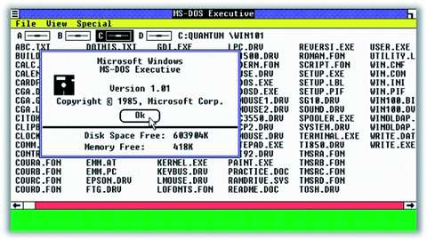

Role operačního systému
Operační systém tvoří prostředníka mezi uživatelem a samotným hardwarem počítače. Jeho jádro zajišťuje správu procesoru, paměti, disků a připojených zařízení.
Moderní operační systémy jsou ovládány hlavně pomocí grafického rozhraní (GUI), zatímco starší systémy pracovaly převážně s příkazovým řádkem (CLI).

Nejrozšířenější systémy
- Desktopové: Windows, Linux, macOS.
- Mobilní: Android, iOS.
- RTOS: Systémy reálného času pro průmysl a robotiku.
Historický vývoj
První operační systémy vznikaly už v 50. letech a sloužily hlavně pro dávkové zpracování úloh. V 60. letech se objevily systémy s časovým sdílením.
V 80. letech se rozšířily osobní počítače s grafickým rozhraním, například Apple Macintosh a později Microsoft Windows. V 90. letech vznikl Linux jako otevřená alternativa.
